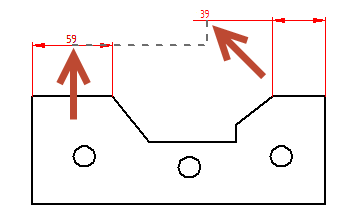
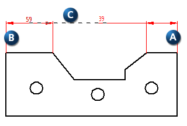
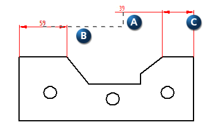
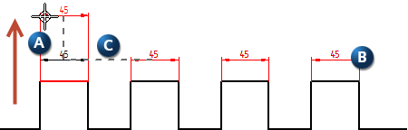
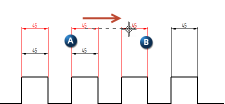

Working with dimension alignment sets
You can use the Smart Dimension command and the Distance Between command when aligning dimensions and creating alignment sets. Other dimension commands,
such as Symmetric Diameter and Coordinate Dimension, automatically align and group dimensions as they are created. In all cases, the
Maintain Alignment Set  must be turned on for dimensions to be added to alignment sets.
must be turned on for dimensions to be added to alignment sets.
Aligning dimensions
Linear dimensions can be aligned during initial placement or modification by using alignment indicators. The on or off state of Maintain Alignment Set has no affect on this; alignment indicators always display.
Alignment indicators display as dashed lines to show horizontal or vertical alignment while you create or modify dimensions. Alignment indicators work similarly to IntelliSketch relationship indicators. If you click when a horizontal or vertical indicator line is displayed, the element you are drawing or modifying will be horizontally or vertically aligned with the element the indicator line leads to.

When creating or modifying dimensions, alignment indicators use the position of the dimension values along the dimension lines as the basis for alignment.

As you position a linear dimension (A), you can move over another dimension (B) to display the dashed alignment indicator (C). When you click the mouse button, the first dimension snaps into collinear alignment with the second.

Dimensions can be stacked using alignment indicators. For stacked dimensions, a perpendicular dashed line (A) is attached to the parallel dashed line (B). The perpendicular line ascends or descends, based on positioning preference, and is attached to the dimension being created or modified (C). The distance between stacked dimensions is set by the stack pitch which is a ratio of the dimension text size. The stack pitch can be modified in the Lines and Coordinates tab in the Dimension Properties dialog box or the Dimension Style dialog box.

Adding a dimension to an existing alignment set
A dimension can be added to an existing alignment set while the dimension is being actively modified. However, the dimension being modified and the alignment set must be the same type. Parallel dimensions can be added to an alignment set with other parallel dimensions. An angular dimension with a specific angle can be added to an alignment set with angular dimensions sharing that specific angle. An angular dimension with a different angle cannot be added to that group.
Manipulating alignment sets
- Moving an alignment set
-
Dragging any member dimension of an alignment set moves the entire group.

- Moving a single dimension while keeping the alignment set intact
-
Press the Alt key while dragging a single dimension (A) in an alignment set (B) to move only that dimension. Stack distances (C) are indicated during this process.

- Merging alignment sets
-
Drag any member dimension from one alignment set (A) to another alignment set (B) to merge the two.

-
Dimensions in the alignment set flip automatically when the entire set is moved from above the drawing to below or from below to above. The dimension being dragged will not flip, but the other dimensions in the group will flip at different points.
-
Deleting a member dimension in an alignment set simply removes the dimension from that group. The alignment set is not split.